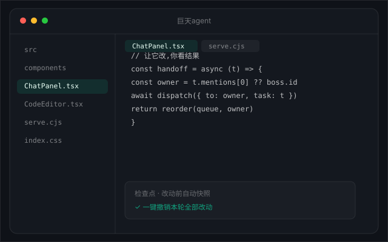
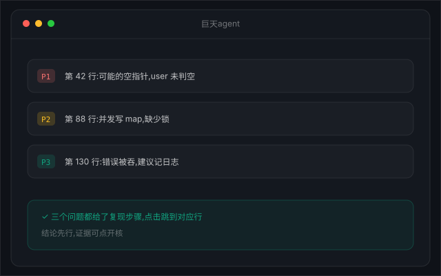
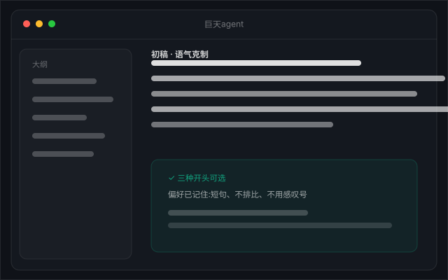
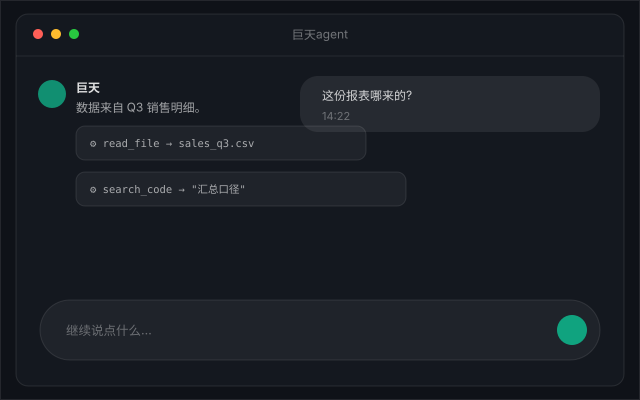
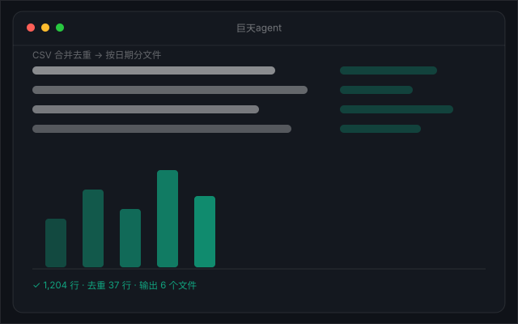
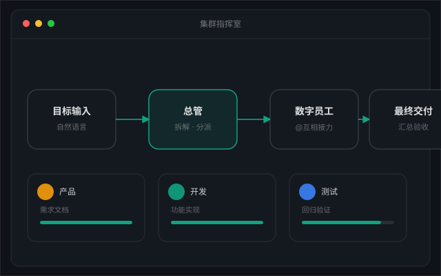

需求进,diff 出
「把这个函数改成异步,顺便补上错误处理。」
它读代码、改代码、跑检查,最后把 diff 摆在你面前。每轮对话前自动快照,不满意一键回到改动前。文件树、终端、代码统计都在同一个窗口,不用切。
不是 demo,是你明天就会遇到的事。
让它改,你看结果。

「把这个函数改成异步,顺便补上错误处理。」
它读代码、改代码、跑检查,最后把 diff 摆在你面前。每轮对话前自动快照,不满意一键回到改动前。文件树、终端、代码统计都在同一个窗口,不用切。

「帮我 review 这段,找坑。」
边界条件、空指针、并发问题,它列成清单给复现步骤。哪个坑在哪一行,点一下就跳过去。
日志丢给它。

「服务挂了,看看日志怎么回事。」
它读日志、跑命令、看进程、查端口,给你根因和修复建议,而不是一句「请检查您的配置」。命令行全过程可见,它做的每一步你都看得见。
初稿,十分钟。

「按这个大纲写初稿,语气克制一点。」
它给结构、给措辞、给三种开头。你只管挑。语气和偏好它记得,下次不用重新交代。

「这个数据哪来的?」
每次回答的工具调用都记着:查了哪个文件、跑了哪条命令、命中几条。点开就能核,不用赌。
表格交给它。

「这堆 CSV 合并去重,按日期分文件。」
它写脚本、跑脚本、验结果。批量重命名、格式转换、图表生成,都是同一套动作:说清楚,它做完,你验收。
一个团队,一个窗口。

「做个登录页,含表单校验和错误提示。」
总管拆成需求、实现、验收三步;产品先出方案,@开发 接去写,@测试 接去验,最后总管汇总交付。谁在干活、干到哪一步,看板上一目了然。员工可以自定义,也能拉群指定老板。